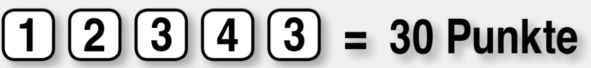

Inhaltsverzeichnis
Spielmaterial
- 5 Würfel
- 1 Würfelbecher
- 1 Kniffel-Block
- 4 Stifte
Spielvorbereitung
Ein Spieler wird bestimmt, der für alle Mitspieler die Punkte in den Kniffel-Block einträgt. Es wird reihum gewürfelt, und wer die höchste Zahl hat, beginnt. Nachdem die Namen der Mitspieler in der obersten Zeile des Kniffel-Blocks notiert sind, kann das Spiel auch schon losgehen
Spielziel
Ziel des Spiels ist es Clever zu würfeln und dabei die meisten Punkte zu erreichen.
Spielverlauf
Die Spieler sind reihum einmal pro Runde mit dem Würfeln an der Reihe. Dabei können sie bis zu dreimal würfeln. Der erste Wurf erfolgt mit allen fünf Würfeln. Danach kann der Spieler sich entscheiden, mit wie vielen Würfeln er beim 2. und 3. Versuch würfeln möchte. Dabei lässt er die Würfel, die er behalten möchte, vor sich liegen, und würfelt nur mit denen, die ihm „nicht gefallen“. So kann er versuchen, sein Ergebnis mit dem 2. und 3. Versuch zu verbessern. Er kann aber auch auf einen oder beide Zusatzwürfe verzichten. Spätestens nach dem dritten Wurf muss der Spieler sein Wurfergebnis in den Kniffel-Block eintragen lassen. Erfüllt der Wurf keine der Bedingungen für die Kästchen, wird ein beliebiges Kästchen „gestrichen“ (= eine Null wird eingetragen).
Kniffelblock Erklärung
{kind=link}
Für jeden Spieler ist auf dem Kniffel-Block eine Spalte vorgesehen, in der seine Ergebnisse eingetragen werden. In jeder Runde muss jeder Mitspieler in einem der 13 Kästchen eine Eintragung machen. Dies sollte möglichst die Summe der gewürfelten Augen sein, aber – wenn’s knifflig wird – ist leider auch mal eine Null dabei…
Die Punkte
Der Kniffel-Block ist unterteilt in einen oberen und einen unteren Teil. Im oberen Teil sind die Kästchen für Einsen, Zweien, Dreien, Vieren, Fünfen und Sechsen. Entschließt sich ein Spieler, sein Würfelergebnis hier eintragen zu lassen, zählt er alle gewürfelten gleichen Zahlen zusammen und der Schreiber trägt das Ergebnis in das entsprechende Kästchen ein.
Bonus
Um den Bonus von 35 Punkten zu bekommen, müssen die Spieler mindestens 63 Punkte im gesamten oberen Teil zusammenaddiert erreichen.
Kästchen für Sonderwürfe
| Bezeichnung | Erklärung | Beispiel |
|---|---|---|
| Dreierpasch | Mindestens drei gleiche Zahlen. Alle Augen des Wurfes (nicht nur die der gleichen Zahlen) werden zusammengezählt | |
| Viererpasch | Mindestens vier gleiche Zahlen. Auch hier werden alle Augen des Wurfes zusammengezählt | |
| Full-House | Drei gleiche und zwei gleiche, andere Zahlen (z.B. drei Vieren und zwei Einsen). Für ein Full-House gibt es pauschal 25 Punkte | |
| Kleine Straße | Eine Folge von vier aufeinander folgenden Würfeln. Der fünfte Würfel kann eine beliebige Zahl zeigen (z.B. 1, 2, 3, 4, 2). Eine kleine Straße bringt pauschal 30 Punkte |  |
| Große Straße | Eine Folge von fünf aufeinander folgenden Würfeln (z.B. 2, 3, 4, 5, 6). Eine große Straße bringt pauschal 40 Punkte | |
| Kniffel | 5 gleiche Zahlen. Ein Kniffel bringt |
Zusätzliche Kniffel
Für jeden zweiten und weiteren Kniffel trägt der Spieler 50 Zusatzpunkte auf der Rückseite des Blocks ein. Zusätzlich hat der Spieler zwei Möglichkeiten:
Kniffel als Joker im oberen Feld:
Der Spieler darf den Wurf in einem beliebigen freien oberen Feld mit der entsprechenden Höchstpunktzahl eintragen. Es ist egal, mit welchem Würfelergebnis der Kniffel erzielt wurde. Der Spieler kann sich z.B. mit einem 4er Kniffel auch die Höchstpunktzahl 25 Punkte im 5er-Feld eintragen.
Kniffel als Joker im unteren Feld:
Der Spieler darf den Wurf in einem beliebigen freien Kästchen im unteren Feld des Blocks mit der Höchstpunktzahl einsetzen. Der Spieler kann sich z.B. 40 Punkte für eine große Straße oder 30 Punkte für einen Viererpasch gutschreiben lassen.
Spielende
Das Spiel endet, sobald das letzte Kästchen beim letzten Spieler ausgefüllt ist. Nun werden alle Punkte (Boni nicht vergessen) zusammengerechnet. Der Spieler mit den meisten Punkten ist der Sieger.